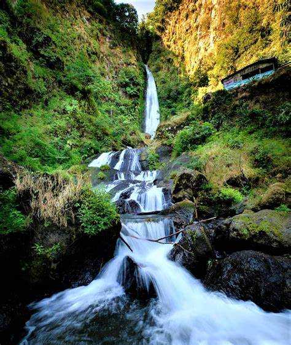

CURUG BAJING
Curug Bajing merupakan salah satu tempat wisata andalan di kawasan Petungkriyono, Pekalongan. Tinggi air tejun mencapai 75 meter, dengan kolam di bawah berdiameter tiga meter. Namun karena kolam terbilang dalam dan berarus deras, pengelola melarang pengunjung untuk berenang di air terjun.
Lokasi Curug Bajing
Lokasi Curug Bajing berada di Desa Tlogopakis, Gumelem, Kecamatan Petungkriyono, Kabupaten Pekalongan, Provinsi Jawa Tengah.
Rute Curug Bajing Petungkriyono
Rute menuju Curug Bajing jika kamu memulai perjalanan dari pusat kota Pekalongan, kamu hanya akan menempuh perjalanan dengan memakan waktu sekitar 1 jam lamanya. Lokasinya searah dengan Curug Muncar. Dimana nantinya kamu akan melewati Pasar Doto, terus melaju sampai akhirnya kamu akan menemukan gerbang Hutan Ekowisata Petungkriyono. Akses menuju Curug Bajing dapat dilalui oleh motor maupun mobil, hanya saja jalannya tak begitu lebar dan tidak semuanya mulus.
Tiket Masuk Curug Bajing Pekalongan
Tiket masuk Curug Bajing sebesar Rp. 5.000,- saja per orangnya.
Jam Buka Curug Bajing
Jam operasional Curug Bajing dibuka setiap hari Senin sampai dengan hari Minggu Buka mulai Pukul 08.00 WIB sampai dengan Pukul 17.00 WIB